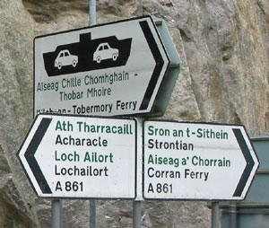
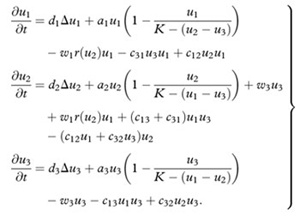

Mathematician Anne Kandler has created a model that shows how a language will fade into oblivion, and how we can instead keep it alive
 Though the truism about Inuits having a hundred words for snow is an exaggeration—they have a few dozen, at most—languages really are full of charming quirks that reveal the character of a culture. Dialects of Scottish Gaelic, for instance, traditionally spoken in the Highlands and, later on, in fishing villages, have a great many very specific words for seaweed, as well as names for each of the components of a rabbit snare and a word for an egg that emerges from a hen sans shell.
Unfortunately for those who find these details fascinating, languages are going extinct at an incredible clip—one dies every 14 days—and linguists are rushing around with tape recorders and word lists trying to record at least a fragment of each before they go. As mathematician Anne Kandler of the Santa Fe Institute notes, the only way the old tongues will stick around is if populations themselves decide that there is something of value in them, whether for reasons of patriotism, cultural heritage, or just to lure in some language-curious tourists.
Say you’ve decided your language is worth keeping. Now how do you go about it?
This is an area where mathematicians can help linguists out. Several years ago, Kandler and her colleagues decided to make a mathematical model of the speakers of an endangered language, to provide a kind of test environment for programs that encourage the learning of local languages. They chose Scottish Gaelic as a good test case, because there are more than 100 years of data on the number of speakers and their demographics. The language has had its ups and downs, most notably repeated attempts by English authorities to extinguish it after the Battle of Culloden and the Highland Clearances. But in the last decade especially, there has been a movement to boost the numbers of Gaelic speakers, with Gaelic radio programs and Gaelic weather reports—even Gaelic playgroups for kids.
The model the mathematicians built blends together numbers from all aspects of Scottish life to sketch a picture of Gaelic’s progress. Some of the numbers are obvious—you must know how many people in the population you’re working with speak just Gaelic, how many speak just English, and how many are bilingual, as well as the rate of loss of Gaelic speakers. But also in the model are numbers that stand for the prestige of each language—the cultural value people place on speaking it—and numbers that describe a language’s economic value.
 Put them all together into a system of equations that describe the growth of the three different groups—English speakers, Gaelic speakers, and bilinguals—and you can calculate what inputs are required for a stable bilingual population to emerge. In 2010, Kandler found that using the most current numbers, a total of 860 English speakers will have to learn Gaelic each year for the number of speakers to stay the same. To her, this sounded like a lot, but the national Gaelic Development Agency was pleased: it’s about the number of bilingual speakers they were already aiming to produce through classes and programs, a spokesman told The Scotsman when Kandler’s study came out. And if more parents who speak Gaelic start passing it on to their kids, lifting the number of native Gaelic speakers, the number of new bilinguals needed could fall by half.
A new census documenting Scottish Gaelic speakers was completed in 2011. The numbers are being analyzed right now, and Kandler’s waiting on tenterhooks to see what they show.
Kandler’s model is unique to Scottish Gaelic: Quechua, Chinook, Istrian Vlashki, and so on will each need their own, taking into account their unique cultural situations. For instance, the languages of the Pueblo tribes around Santa Fe are spoken by so few people—just a few hundred at most—that by many linguists’ estimates they should have gone extinct long ago. Yet they persist. It would be fascinating to know, through further work like Kandler’s, what factors have kept such languages alive, and whether their lessons can be applied to other endangered tongues.
Veronique Greenwood
June 04, 2012
© 2012 Discover Magazine